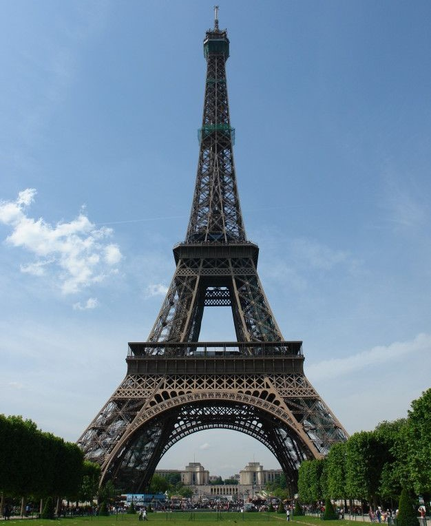
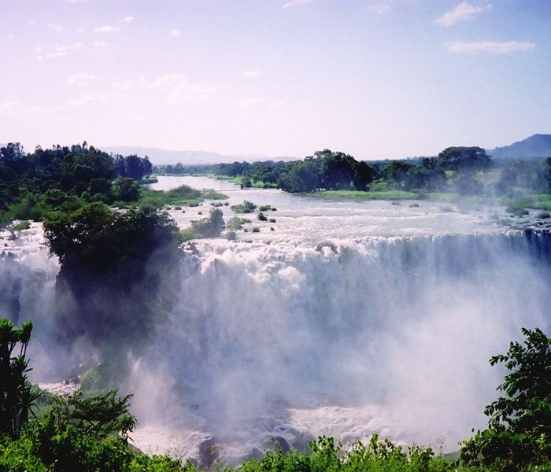

The Rock Hewn Churches of Lalibela

The churches of Lalibela are one of Ethiopia's famous tourist destinations. Known for the incredible architecture and religious principles, the 11 churches of Lalibela are each made from one rock. The churches were built by the Ethiopian king Lalibela in the hope of providing a pilgrimage place for Ethiopian Orthodox Christians. I have always wanted to visit this wonderful place.
Located in the Lasta district and North Wollo Zone, it is a tourist site for its famous rock-cut monolithic churches. The whole of Lalibela is a large and important site for the antiquity, medieval, and post-medieval civilization of Ethiopia. To Christians, Lalibela is one of Ethiopia's holiest cities, and a center of pilgrimage. Ethiopia was one of the earliest nations to adopt Christianity in the first half of the 4th century, and its historical roots date to the time of the Apostles. The churches themselves date from the 7th to 13th centuries, and are traditionally dated to the reign of the Zagwe (Agaw) king Gebre Mesqel Lalibela.
The Eiffle tower

The Eiffle tower is the ultimate source of Paris's beauty. More than hundreds of people from all over the world visit this site every day. I want to go there one day and enjoy the view from the tower and the people's ways of life. is a wrought-iron lattice tower on the Champ de Mars in Paris, France. It is named after the engineer Gustave Eiffel, whose company designed and built the tower from 1887 to 1889.
Locally nicknamed La dame de fer
(French for Iron Lady
), it was constructed as the centerpiece of the 1889 World's Fair, and to crown the centennial anniversary of the French Revolution. Although initially criticised by some of France's leading artists and intellectuals for its design, it has since become a global cultural icon of France and one of the most recognisable structures in the world.The tower received 5,889,000 visitors in 2022.
Tis Abay

Tis abay, or literally translated to smoking Abay, is a waterfall on the Blue Nile River found in West Gojjam. It is located around 30 kms south of Lake Tana in Bahirdar. The view of the waterfall from down is so majestic and breathtaking. It is one of the places I would like to visit one day.
The falls are 42 metres (138 ft) high, consisting of four streams that vary from a trickle in the dry season to over 400 meters wide in the rainy season. Regulation of Lake Tana now reduces the variation somewhat, and since 2003 a hydro-electric station has taken much of the flow out of the falls except during the rainy season. The Blue Nile Falls isolate the ecology of Lake Tana from the ecology of the rest of the Nile, and this isolation has played a role in the evolution of the endemic fauna of the lake.